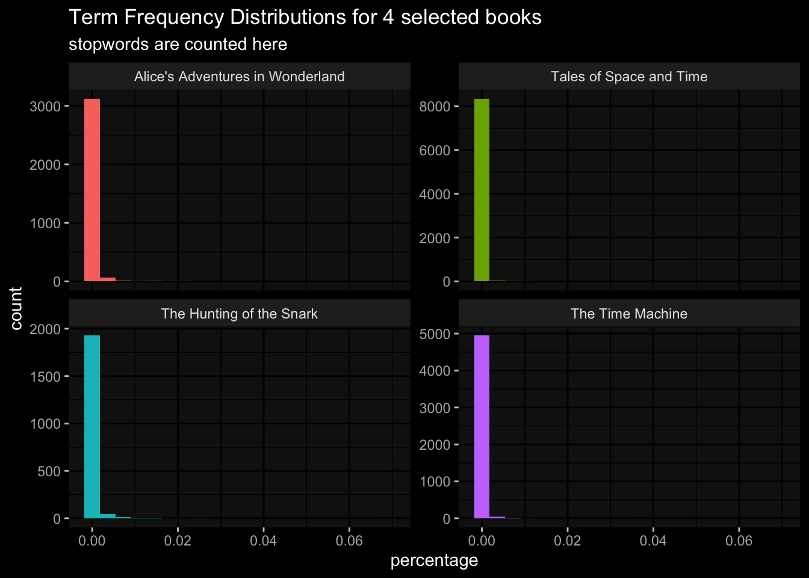

library(tidyverse)
library(tidytext)
library(readtext) # read in various text file formats
library(rvest) # web scrape
library(ralger) # another web scraping library
library(wordcloud2) # flexible word cloud4 TidyText
This section is about the Text Mining with R book by Julia Silge and David Robinson, but delivered in a different way and with different examples. This section is not trying to copy nor reproduce their work, but with the goal of showing real world examples. This section will not do much explaining of concepts as the original material covers that.
If you read this book without reading the Text Mining with R book first, you will still hopefully be able to follow along and understand the functions. This section covers most of the book but not everything, the code here is reduced and simplified.
4.1 libraries
The necessary libraries to follow along with this section.
4.2 Text
You need or want text to analyze, so let us scrape the web to get some! This is 2 skills in one, web scrape and tokenization of text. In this example we will web scrape the movie transcript of Star Trek II : The Wrath of Khan, as it is a beginner friendly example.
If you use Chrome browser and have SelectorGadget browser extension, this is very helpful in finding the HTML <tags> when scraping the web.
# Star Trek transcripts url
trek_url = "http://www.chakoteya.net/movies/movie2.html"
# use rvest to read the html
# use SelectorGadget to find tag for all the text on page
# retrieve only the text on page
trek_dialogue = rvest::read_html(trek_url) %>%
# this website has all text in the "td" tag
rvest::html_elements("td") %>%
rvest::html_text2()4.2.1 Tokens
The trek_dialogue returns 1 very long string, this text needs to be tokenized in order for it to be used for analysis.
Step one is to convert our long string into a data frame then tokenize it by using tidytext unnest_tokens() function.
trek_df = tibble( trek_dialogue) %>%
unnest_tokens(input = trek_dialogue, output = word)
head(trek_df)# A tibble: 6 × 1
word
<chr>
1 opening
2 credits
3 in
4 the
5 23rd
6 century4.2.2 Clean tokens
We have a dataframe with tokenized words, but the words include stopwords which include words like: “a”, “but”, “such”, “sometimes”, etc. and have no value in text analysis. To remove all of these stopwords is by using tidytext stop_words.
trek_df_clean = trek_df %>%
anti_join(stop_words)Joining, by = "word"head(trek_df_clean)# A tibble: 6 × 1
word
<chr>
1 credits
2 23rd
3 century
4 bridge
5 simulator
6 captain'sWe went from 8,852 tokens to 4,070 tokens.
4.2.3 Word count
Now we have a cleaned tokenized data frame, we can find out what are the most common words in this movie Wrath of Khan.
trek_wordcount = trek_df_clean %>%
dplyr::count(word, sort = TRUE)
# we can use ggplot to visualize
library(ggplot2) # just in case tidyverse did not include this
trek_wordcount %>%
# word counts greater than 50
dplyr::filter(n > 50) %>%
ggplot(
aes( x= n,
y= reorder(word, n),
fill= n
)
) +
geom_col() +
ggdark::dark_mode() +
labs(title = "Word Count for Star Trek II: Wrath of Khan",
y="",
x="word count",
fill="count"
)Inverted geom defaults of fill and color/colour.
To change them back, use invert_geom_defaults().
4.3 Sentiment
For Sentiment Analysis you need to load in the sentiment lexicon libraries. The three main ones used are:
- AFINN
- bing
- nrc
Each have their use-cases and licenses, but we will use bing here as it bins sentiments into ‘positive’ / ‘negative’.
The goal is to bind the words in our Star Trek data frame and the sentiment.
# get the bing sentiment
bing = get_sentiments("bing")
trek_df_clean_sentiment = trek_df_clean %>%
count(word, sort = T) %>%
inner_join(bing) %>%
ungroup()Joining, by = "word"head( trek_df_clean_sentiment)# A tibble: 6 × 3
word n sentiment
<chr> <int> <chr>
1 death 12 negative
2 dead 10 negative
3 damn 9 negative
4 kill 7 negative
5 ready 7 positive
6 warp 7 negative trek_df_clean_sentiment %>%
filter(n > 3) %>%
ggplot(
aes(x= n,
y= sentiment,
fill= sentiment)
)+
geom_col()+
facet_wrap( ~ word, ncol = 2, scales = "free_y") +
ggdark::dark_mode()
The word warp is more of a neutral word but this Star Trek text is not common for everyday text analysis, so uncommon output is to be expected.
trek_df_clean_sentiment %>%
group_by(sentiment) %>%
slice_max(n, n= 5) %>%
ungroup() %>%
mutate(word = reorder(word, n)) %>%
ggplot(
aes(x= n,
y= word,
fill= sentiment
)
)+
geom_col(show.legend = F) +
facet_wrap( ~sentiment, scales = "free_y")+
ggdark::dark_mode() +
labs(x= "Contribution to sentiment", y="", title = "Words that contribute to positive and negative sentiment: ST: Wrath of Khan")
4.4 Wordclouds
As a person who tries to avoid white backgrounds of websites, plots, and documents I like using the library wordcloud2 as you can change the background color of the word cloud. With wordcloud2 is that you have interactive word clouds, when your mouse hovers over a word it tells you the number of times that word is counted (obviously when a word count is conducted).
library(wordcloud2)
trek_df_clean %>%
count(word, sort = T) %>%
filter(n > 10) %>%
wordcloud2(size = 1,
minSize = 0.8,
backgroundColor = "black",
color = "random-light",
shape = "pentagon" #"circle"
)4.4.1 Sentiment wordcloud
If interested in specific sentiment words to make a word cloud based on word counts. Here is a positive word cloud based on Star Trek II: Wrath of Khan.
trek_df_clean_sentiment %>%
filter(sentiment == "positive") %>%
wordcloud2(
size = 0.8,
minSize = 0.6,
backgroundColor = "black",
color = "random-light"
)Here is the negative sentiment for our Star Trek text data frame.
trek_df_clean_sentiment %>%
filter(sentiment == "negative") %>%
wordcloud2(
size = 0.8,
minSize = 0.6,
backgroundColor = "black",
color = "random-light"
)4.5 document-term-frequency
In the Quanteda section this was called document-feature-matrix. The main query is how often in frequency does a word appear in a text, a chapter or book? To help answer that is to use the inverse term frequency and inverse document frequency (tdf). This tdfplaces less importance on words that are common and more importance on less common words. Together the inverse term frequency + inverse document frequency = tf_idf.
Note that this section we do not remove stopwords as they will get a higher weight scale, where we care more about the high weight scale score for less common words.
This section will follow a similar example however we have different books and at this time the Gutenbergr package was giving errors on downloading more than one book. The goal is to look at word frequencies that differ chapters of an author’s book and between authors. The books selected here are:
- Alice’s Adventures in Wonderland, by Lewis Carroll
- The Hunting of the Snark, by Lewis Carroll
- The Time Machine, by H. G. Wells
- Tales of Space and Time, by Herbert George Wells
The code below uses the url and downloads the text into an individual book, then each book is made into a dataframe with each book being labelled.
books = tibble(
book = c("Alice's Adventures in Wonderland",
"The Hunting of the Snark",
"The Time Machine",
"Tales of Space and Time"),
book_urls = c("https://www.gutenberg.org/files/11/11-0.txt",
"https://www.gutenberg.org/cache/epub/13/pg13.txt",
"https://www.gutenberg.org/files/35/35-0.txt",
"https://www.gutenberg.org/files/27365/27365-0.txt")
) %>%
dplyr::mutate(
book_text = purrr::map_chr(book_urls,
~.x %>%
rvest::read_html() %>%
rvest::html_text2()
))head(books)# A tibble: 4 × 3
book book_urls book_…¹
<chr> <chr> <chr>
1 Alice's Adventures in Wonderland https://www.gutenberg.org/files/11/1… "The P…
2 The Hunting of the Snark https://www.gutenberg.org/cache/epub… "The P…
3 The Time Machine https://www.gutenberg.org/files/35/3… "The P…
4 Tales of Space and Time https://www.gutenberg.org/files/2736… "Proje…
# … with abbreviated variable name ¹book_textNow that we have our text dataframe, we can tokenize the text.
book_tokens = books %>%
unnest_tokens(input = book_text, output = word)book_words = book_tokens %>%
count(book, word, sort = T)total_book_words = book_words %>%
group_by(book) %>%
summarise( total = sum((n)))
total_book_words# A tibble: 4 × 2
book total
<chr> <int>
1 Alice's Adventures in Wonderland 29983
2 Tales of Space and Time 76928
3 The Hunting of the Snark 8433
4 The Time Machine 35960full_book_words = left_join(book_words, total_book_words) %>%
mutate(percentage = n /total )Joining, by = "book"head(full_book_words)# A tibble: 6 × 5
book word n total percentage
<chr> <chr> <int> <int> <dbl>
1 Tales of Space and Time the 5216 76928 0.0678
2 Tales of Space and Time and 3475 76928 0.0452
3 Tales of Space and Time of 2665 76928 0.0346
4 The Time Machine the 2475 35960 0.0688
5 Tales of Space and Time a 1928 76928 0.0251
6 Alice's Adventures in Wonderland the 1839 29983 0.0613ggplot(
data = full_book_words,
aes(x = percentage , fill= book)
)+
geom_histogram( show.legend = F, bins = 20)+
facet_wrap( ~book, ncol = 2, scales = "free_y")+
ggdark::dark_mode()+
labs(title = "Term Frequency Distributions for 4 selected books",
subtitle = "stopwords are counted here")
The plot shows that there are many non-stopwords used in these books.
4.5.1 tf_idf function
Find the words most important to a document or corpus and the weighted score value depends on how frequent that word is within the corpus. The tidytext has a function bind_tf_idf() to help find important words.
0= very common words- non-0 are words less common
books_tf_idf = full_book_words %>%
bind_tf_idf(word, book, n)
head(books_tf_idf)# A tibble: 6 × 8
book word n total perce…¹ tf idf tf_idf
<chr> <chr> <int> <int> <dbl> <dbl> <dbl> <dbl>
1 Tales of Space and Time the 5216 76928 0.0678 0.0678 0 0
2 Tales of Space and Time and 3475 76928 0.0452 0.0452 0 0
3 Tales of Space and Time of 2665 76928 0.0346 0.0346 0 0
4 The Time Machine the 2475 35960 0.0688 0.0688 0 0
5 Tales of Space and Time a 1928 76928 0.0251 0.0251 0 0
6 Alice's Adventures in Wonderland the 1839 29983 0.0613 0.0613 0 0
# … with abbreviated variable name ¹percentagebooks_tf_idf %>%
select( -total, -percentage ) %>%
arrange( desc(tf_idf))# A tibble: 18,640 × 6
book word n tf idf tf_idf
<chr> <chr> <int> <dbl> <dbl> <dbl>
1 Alice's Adventures in Wonderland alice 386 0.0129 1.39 0.0178
2 The Hunting of the Snark snark 36 0.00427 1.39 0.00592
3 The Hunting of the Snark bellman 32 0.00379 1.39 0.00526
4 Tales of Space and Time lomi 202 0.00263 1.39 0.00364
5 Tales of Space and Time denton 172 0.00224 1.39 0.00310
6 Alice's Adventures in Wonderland turtle 56 0.00187 1.39 0.00259
7 Alice's Adventures in Wonderland gryphon 55 0.00183 1.39 0.00254
8 Alice's Adventures in Wonderland hatter 55 0.00183 1.39 0.00254
9 The Hunting of the Snark beaver 15 0.00178 1.39 0.00247
10 Tales of Space and Time mr 261 0.00339 0.693 0.00235
# … with 18,630 more rowsbooks_tf_idf %>%
select( -total, -percentage ) %>%
group_by( book ) %>%
slice_max(tf_idf, n= 15) %>%
ungroup() %>%
ggplot(
aes(x= tf_idf,
y= reorder(word, tf_idf),
fill= book
)
)+
geom_col(show.legend = F)+
facet_wrap(~book, ncol = 2, scales = "free")+
labs(x= "tf_idf", y="",
title = "Lewis Carroll vs H.G. Wells books",
subtitle = "term frequency-inverse document frequency"
)+
ggdark::dark_mode()
The tf_idf plot show that H.G. Wells books on the right differ in words than Lewis Carroll books. Lewis Carroll uses more common words than H.G. Wells.
4.6 n-grams
Words in pairs instead of alone, single words without context. Use the unnest_tokens() function but pass in “ngram” the argument along with the number of words to include.
This example will use Twitter data, specifically tweets that had the hashtag “#Toronto” in the tweet, no other Twitter data is included here. The data was collected using the rtweet package. For this n-grams section it is important to use the rtweet library to read in the data as you will get errors when trying to make bigrams.
tweets = rtweet::read_twitter_csv("./TorontoTweetsText.csv")
head(tweets)# A tibble: 6 × 1
text
<chr>
1 "📌 @mlleperez\n#Toronto #TheSix #EstudiaenCanadá🇨🇦 https://t.co/FzjSa3PhDv"
2 "September marks a huge milestone @DistilleryTO …190 years old! Come explore …
3 "The average home price rising again in Toronto.\nhttps://t.co/NjHh7B5Odo\n#t…
4 "Sault News: Real estate prices expected to remain stable | CTV News\nhttps:/…
5 "Saturday vibes! #Toronto https://t.co/RKEosXP6X7"
6 "#Toronto head over to #BloorWest to support #Ukraine️ this afternoon! https:/…4.6.1 bigrams
Since we used the rweet library to read in the data, we are able to make bigrams. You will get an error if you use the read_csv() to load in the file.
# unnest tokens
# output is bigram
# n= 2
# token = "ngram" error if you use 'bigram'
tweets_token = tweets %>%
unnest_tokens(input = text,
output = bigram,
n=2,
token = "ngrams"
)4.6.2 count n-grams
Let us see what 2 words often appear in this twitter text data.
tweets_token %>%
count( bigram, sort = T)# A tibble: 108,145 × 2
bigram n
<chr> <int>
1 https t.co 8657
2 toronto https 1131
3 in toronto 1055
4 toronto canada 551
5 to the 422
6 in the 342
7 the best 335
8 of the 332
9 from toronto 290
10 the world 288
# … with 108,135 more rowsThe most common bigram is a short hyperlink “t.co”. Keep in mind that stopwords are still included in this text data.
We can make 2 columns each for the words that comprise of a bigram.
tweet_bigrams = tweets_token %>%
separate( bigram, c("word1","word2"), sep = " ")
twitter_bigram_filtered = tweet_bigrams %>%
# check to see if word1 & word2 are not in stopwords
filter( !word1 %in% stop_words$word) %>%
filter(!word2 %in% stop_words$word) %>%
# drop the website links
filter(!word1 %in% c("https","t.co")) %>%
filter(!word2 %in% c("https","t.co"))Now with filtered clean bigrams we can do a word count
twitter_bigram_counts = twitter_bigram_filtered %>%
count(word1, word2, sort = T)
head(twitter_bigram_counts)# A tibble: 6 × 3
word1 word2 n
<chr> <chr> <int>
1 toronto canada 551
2 toronto ontario 257
3 air nowplaying 246
4 family playing 246
5 global reggae 246
6 reggae family 246what is the words associated when word2 is “reggae” ?
twitter_bigram_filtered %>%
filter(word2 == "reggae") %>%
count(word1, sort = T)# A tibble: 30 × 2
word1 n
<chr> <int>
1 global 246
2 rootsreggaehub 246
3 nights 10
4 canadian 5
5 julionking 3
6 bamboo 2
7 copa 2
8 grove 2
9 music 2
10 rivoli 2
# … with 20 more rowsUnite the bigrams
twitter_bigrams_united = twitter_bigram_counts %>%
unite(bigram, word1, word2, sep = " ")
twitter_bigrams_united# A tibble: 51,847 × 2
bigram n
<chr> <int>
1 toronto canada 551
2 toronto ontario 257
3 air nowplaying 246
4 family playing 246
5 global reggae 246
6 reggae family 246
7 reggae music 246
8 reggae reggaeallday 246
9 reggaeallday toronto 246
10 rootsreggaehub reggae 246
# … with 51,837 more rowstwitter_bigrams_united %>%
top_n(20) %>%
ggplot(
aes(x= n,
y= reorder(bigram, n),
fill= n
)
)+
geom_col(show.legend = F)+
ggdark::dark_mode()Selecting by n
4.6.3 sentiment ngrams
It appears that the theme behind all the tweets were about reggae music. If word1 was reggae what would the second word be and how often would it appear?
tweet_bigrams %>%
filter(word1 =="reggae") %>%
count(word1, word2, sort = T)# A tibble: 19 × 3
word1 word2 n
<chr> <chr> <int>
1 reggae family 246
2 reggae music 246
3 reggae reggaeallday 246
4 reggae toronto 31
5 reggae artist 3
6 reggae reggaemusic 2
7 reggae world 2
8 reggae alive 1
9 reggae amp 1
10 reggae and 1
11 reggae bobmarley 1
12 reggae feat 1
13 reggae feelreggae 1
14 reggae lane 1
15 reggae mkrumah 1
16 reggae pop 1
17 reggae reggaelane 1
18 reggae sat 1
19 reggae upcomingartist 1load in the sentiment libraries from tidytext, this time we will use the AFINN library
# sentiment
AFINN = get_sentiments("afinn")
toronto_words = tweet_bigrams %>%
filter(word1 =="toronto") %>%
# add the sentiment library
inner_join(AFINN, by= c(word2 = "word")) %>%
count(word2, value, sort = T)
head(toronto_words)# A tibble: 6 × 3
word2 value n
<chr> <dbl> <int>
1 please 1 8
2 welcome 2 7
3 join 1 6
4 crime -3 4
5 fire -2 4
6 great 3 4word1 being ‘toronto’, the most common word to follow it is ‘please’. Making “Toronto please” which has a positive sentiment value.
toronto_words %>%
mutate(contribution = n * value) %>%
arrange( desc( abs( contribution ))) %>%
head( 20 ) %>%
mutate( word2 = reorder(word2, contribution )) %>%
ggplot(
aes(x= contribution,
y= word2,
fill = contribution > 0)
) +
geom_col(show.legend = F) +
ggdark::dark_mode() +
labs(title = "Tweets with #Toronto, n = 7,985",
subtitle = "words split into bigrams",
x= "Sentiment value * number of occurrences (contribution)",
y= "Words preceded by \"Toronto\"")
to look at the negative sentiment word2 that follow ‘toronto’ arranged by most negative value.
toronto_words %>%
filter(value < 0) %>%
count( word2, value) %>%
arrange( value)# A tibble: 19 × 3
word2 value n
<chr> <dbl> <int>
1 fuck -4 1
2 crime -3 1
3 kill -3 1
4 alone -2 1
5 collision -2 1
6 fire -2 1
7 missing -2 1
8 protest -2 1
9 alert -1 1
10 attacks -1 1
11 bias -1 1
12 escape -1 1
13 eviction -1 1
14 hard -1 1
15 moody -1 1
16 no -1 1
17 pay -1 1
18 pressure -1 1
19 stop -1 1tweets %>%
unnest_tokens(input = text, output = word) %>%
inner_join(get_sentiments("bing"), by= 'word') %>%
count(sentiment, word, sort = T) %>%
ungroup() %>%
filter( n >= 50) %>%
mutate( n = ifelse(sentiment == "negative", -n, n)) %>%
mutate( word = reorder(word, n)) %>%
ggplot(
aes(x= n,
y= word,
fill= sentiment
)
)+
geom_col()+
labs(title ="Twitter text word sentiment" ,
x="contribution to sentiment", y="")+
ggdark::dark_mode()
4.7 word graph
Visualize the word connections, with nodes and lines, each with weight values.
library(igraph)
library(ggraph)
set.seed(100)
twitter_bigram_counts %>%
filter( n > 50) %>%
igraph::graph_from_data_frame() %>%
ggraph::ggraph(layout = "fr") +
geom_edge_link2( aes(edge_alpha= n,
colour='pink'),
check_overlap = T,
show.legend = F
) +
geom_node_point(color= "#66ffff") +
geom_node_text( aes(label= name), vjust= 1, hjust= 1.2)+
ggdark::dark_mode()+
theme(
axis.text = element_blank(),
axis.title = element_blank()
)
Words centered around “toronto” and “mississauga” whic is part of Toronto and the “gta” also known as the Greater Toronto Area. The graph shows a relationship with the node ‘toronto’ to ‘reggaeallday’ to ‘reggae’ and associated words.
4.7.1 pairwise ngrams
Pairwise correlation to look at words frequency and how often the two words are used together. The metric used in the phi coefficient, which indicates whether either word appear together than independently.
twitter_cor = twitter_bigram_counts %>%
group_by(word1) %>%
filter( n >= 30) %>%
widyr::pairwise_cor(word1, word2, sort=T)What words are correlated with the first word ‘toronto’.
twitter_cor %>%
filter(item1 =="toronto")# A tibble: 98 × 3
item1 item2 correlation
<chr> <chr> <dbl>
1 toronto art 0.184
2 toronto quebec 0.184
3 toronto canada 0.0923
4 toronto montreal 0.0923
5 toronto ontario 0.0923
6 toronto onpoli 0.0923
7 toronto air -0.0543
8 toronto family -0.0543
9 toronto global -0.0543
10 toronto reggaeallday -0.0543
# … with 88 more rowsfilter on some words of particular interest to see correlation
twitter_cor %>%
filter(item1 %in% c("toronto","reggae","tiff","music")) %>%
group_by(item1) %>%
slice_max(correlation, n = 5) %>%
ungroup() %>%
mutate(item2 = reorder(item2, correlation)) %>%
ggplot(
aes(x= item2,
y= correlation,
)
)+
geom_bar(stat = "identity")+
facet_wrap(~item1, scales = "free")+
coord_flip()+
ggdark::dark_mode()
correlations greater than 0.65
twitter_cor %>%
filter(correlation > .65) %>%
graph_from_data_frame() %>%
ggraph(layout = 'fr') +
geom_edge_link2(
check_overlap = T,
show.legend = F
) +
geom_node_point(color= "#66ffff", size= 3) +
geom_node_text( aes(label= name),
color='white', hjust=1, vjust=1,
repel = T)+
ggdark::dark_mode()+
theme(
axis.text = element_blank(),
axis.title = element_blank()
)Warning: ggrepel: 4 unlabeled data points (too many overlaps). Consider
increasing max.overlaps
4.8 Topic Modeling
Topic modeling is classification of documents which aims to find groups within the corpus.
Using the books from before, tokenization, find the word ‘chapter’ in the token words, then remove the stopwords and count words by book.
book_word_counts = books %>%
group_by(book) %>%
unnest_tokens(input = book_text, output = word ) %>%
mutate(chapter = cumsum(str_detect(word, regex("^chapter", ignore_case = T)))
) %>%
ungroup() %>%
filter( chapter > 0,
!word %in% c("project","gutenberg")) %>%
anti_join(stop_words) %>%
count(book, word, sort = T)Joining, by = "word"head(book_word_counts)# A tibble: 6 × 3
book word n
<chr> <chr> <int>
1 Alice's Adventures in Wonderland alice 386
2 Tales of Space and Time denton 170
3 Tales of Space and Time elizabeth 115
4 Tales of Space and Time time 90
5 Tales of Space and Time fotheringay 85
6 Tales of Space and Time life 75for topic models we need a document term matrix in order to use Latent Dirichlet Allocation algorithms for out topic modeling.
library(topicmodels)
book_dtm = book_word_counts %>%
cast_dfm(book, word, n)Warning in .recacheSubclasses(def@className, def, env): undefined subclass
"packedMatrix" of class "mMatrix"; definition not updatedWarning in .recacheSubclasses(def@className, def, env): undefined subclass
"packedMatrix" of class "replValueSp"; definition not updatedbook_LDA = topicmodels::LDA(book_dtm, k= 4, control= list(seed= 20))
book_LDA_topics = tidy(book_LDA, matrix= 'beta')
head(book_LDA_topics)# A tibble: 6 × 3
topic term beta
<int> <chr> <dbl>
1 1 alice 5.07e- 2
2 2 alice 3.29e- 2
3 3 alice 2.19e-21
4 4 alice 4.31e-22
5 1 denton 2.94e-20
6 2 denton 3.04e-21Alice is close to 0 for topics 1,2, and 3, but near 1% for topic 4.
book_LDA_top5 = book_LDA_topics %>%
group_by(topic) %>%
slice_max(beta, n= 5) %>%
ungroup() %>%
arrange(topic, -beta)
head(book_LDA_top5)# A tibble: 6 × 3
topic term beta
<int> <chr> <dbl>
1 1 alice 0.0507
2 1 rabbit 0.0127
3 1 queen 0.0108
4 1 don’t 0.00850
5 1 head 0.00809
6 2 alice 0.0329 book_LDA_top5 %>%
# matches the term to topic with __
mutate(term = reorder_within(term, beta, topic)) %>%
ggplot(
aes(x= beta,
y= term,
fill= factor(topic)
)
)+
geom_col(show.legend = F)+
facet_wrap(~topic, scales = "free")+
scale_y_reordered()+
ggdark::dark_mode()+
labs(title = "Latent Dirichlet Allocation",
subtitle = "words most common within each topic")
The words “Alice”, “rabbit”, “queen” obviously belong to Alice in Wonderland book. While the words “denton” and “elizabeth” belong to the Tales of Space and Time.
This concludes the TidyText section of this book.